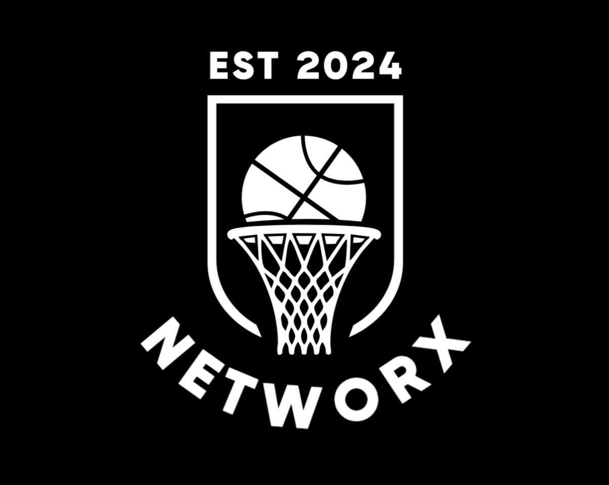

.: Task Assist :.
The last task managing app you will ever need. Task Assist lets users manage personal, work, and even private tasks. Users can add, delete, update and view their tasks. They can also categorize tasks and set priority levels for them, as well as set an optional due date. Users can also see their private tasks in a different page, adding one more small layer of security on top of logging in using their google account.
Tech used: HTML, CSS, React, Typescript, Firebase, Express, MongoDB, Node.js
My contributions:
- Created the initial frontend design
- Created initial sidebar and sidebar functionality
- Contributed the TaskAssist logo
- Created Dark Mode and Dark Mode functionality
- Connected the local database to communicate with the frontend via API
- Created the initial repository for the project
- Adapted the repository into two new repositories to make file
structure between frontend and backend clearer - Made the application responsive across Mobile, tablets, and desktops
- Created the mongodb database to store user tasks
- Created the Add A Task component and component functionality
- Created the Private Task component and component functionality
- Created the Share A Task component and component functionality
Click to see Github Repository
.: Service-Based Tipper :.
A tipping application based off of the user's experience with the service provided. We think more easily in terms of our human experience than we do in terms of pure mathematics, so this app is more intuitive in that sense. A little message follows the tip calculation to make the user's app experience more like they're asking a friend how much to tip instead of using a calculator.
Tech used: HTML, CSS, Javascript
Click to see Github Repository
.: Reddit API :.
The user can get the latest updates from Reddit's r/Aww forum by fetching an API and displaying real-time posts. If the user wishes, they can click a link to a post and read further comments on the post clicked via reddit.com
Tech used: HTML, CSS, Javascript, APIs
Click to see Github Repository
.: Portfolio Site :.
This portfolio site uses Javascript for its video slideshow functionality. It uses multiple media queries to accomodate different screen sizes, a flexbox grid for the tech stack images, and consistent bold typefacing for an easy to read experience.
Tech used: HTML, CSS, Javascript
Click to see Github Repository


What's next for 2025?
Utilizing React Native and Expo to create an oasis where basketball enthusiasts and players can connect to find local games and courts in their area with my application "Networx". Also obtaining the AWS Solutions Architect Certification!
